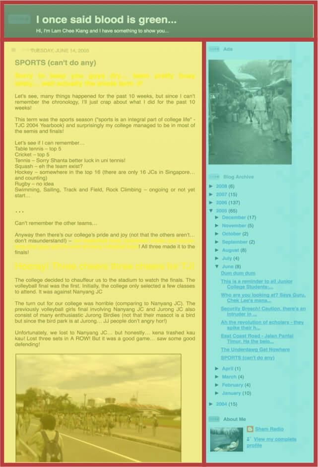
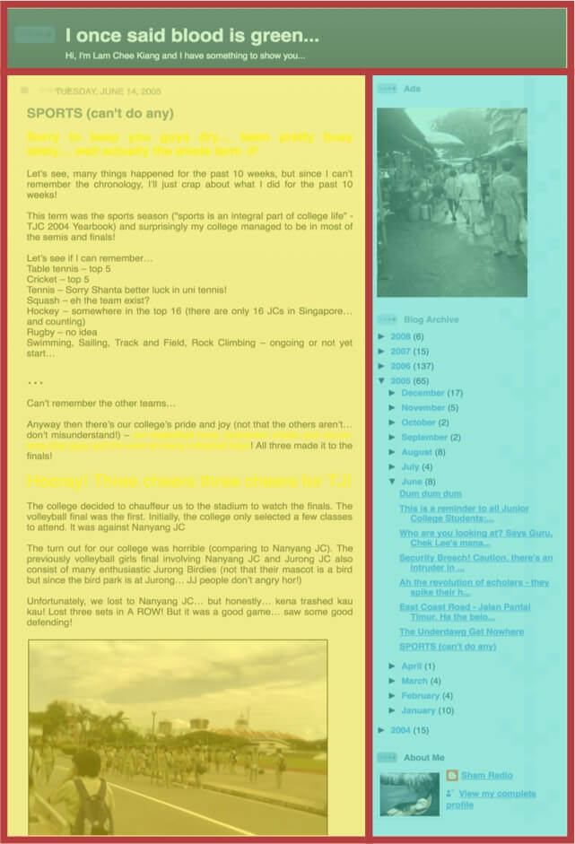
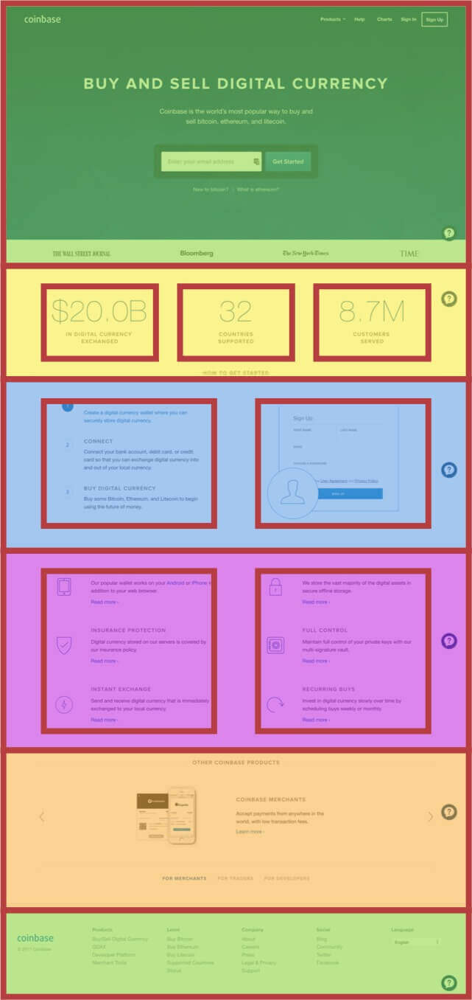
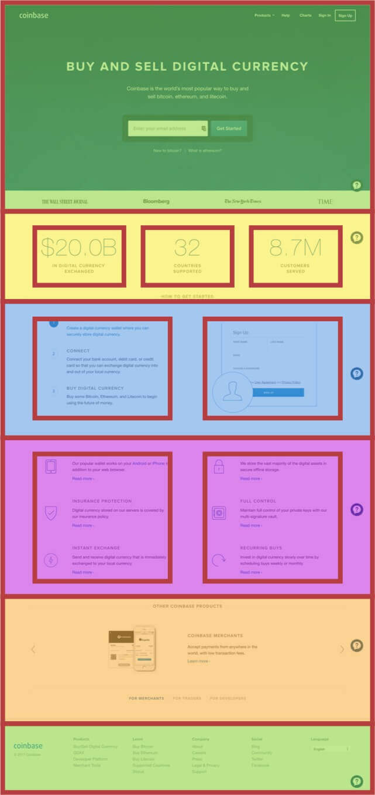
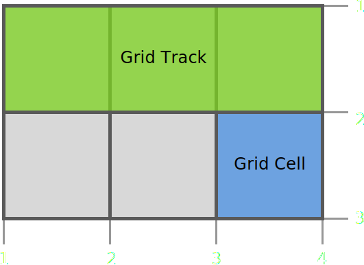

Be like water
Applying Bruce Lee's philosophy to web design
Bruce Lee

李小龍
“Be formless, shapeless, like water. Now you put water into a cup, it becomes the cup. You put water into a bottle, it becomes the bottle. You put it in a teapot, it becomes the teapot. Now water can flow, or it can crash. Be water, my friend.”
—Bruce Lee


The “Blog” layout

 

The “Holy Grail” layout


The “Panel” layout

 

12 columns
Rectangles
Let's establish a new normal
“The hardest part is changing our thinking, not our CSS”
—Jen Simmons
State of Browsers (2017)


and many more...
CSS Layout Toolbox (2017)
Feature Queries

.selector {
/* Styles that are supported in old browsers */
}
@supports (property:value) {
.selector {
/* Styles for browsers that support the specified property */
}
}


Flexbox and Grid
Based on the container-child relationship
Flexbox
Provides “simple and powerful tools for distributing space and aligning content in ways that web apps and complex web pages often need.”
Flex shorthand
flex: initial |
flex: 0 1 auto, cannot grow but can shrink when there isn't enough space |
flex: auto |
flex: 1 1 auto, can grow and shrink to fit available space |
flex: none |
flex: 0 0 auto, cannot grow or shrink, AKA inflexible |
flex: <positive-number> |
flex: <positive-number> 1 0, can grow and shrink, extent of growth depends on flex factor |
Flexbox layouts (1/2)


Flexbox layouts (2/2)
calc() and object-fit browser support


CSS Grid
Defines a two-dimensional grid-based layout system, optimized for user interface design
CSS Grid browser support

“We need to translate ideas that we find in other places, not transfer them.”
—Jen Simmons
CSS grid basics
Define your grid.
Place items in the grid.
Fixed CSS grid
.container {
display: grid;
grid-template-columns: repeat(5, 10em);
}Fluid CSS grid
.container {
display: grid;
grid-template-columns: repeat(5, 1fr);
}Responsive CSS grid
.container {
display: grid;
grid-template-columns: repeat(5, minmax(10em, 1fr));
}Placing grid items
grid-row and grid-column

Whitespace


Overlap (1/2)
.grid-cont2 {
display: grid;
grid-template-columns: repeat(9, 1.25em);
grid-template-rows: repeat(6, 1.25em);
}
h2 {
grid-row: 3 / 5;
grid-column: 1 / 10;
}
.grid-cont2::before {
grid-row: 1 / 7;
grid-column: 1 / 7;
}
.grid-cont2::after {
grid-row: 1 / 7;
grid-column: 4 / 10;
}
Overlap (2/2)
main {
display: grid;
grid-template-columns: repeat(auto-fill, minmax(8em, 1fr));
grid-auto-rows: 8em;
}
@media screen and (max-width: 383px) {
main {
grid-template-rows: 3em repeat(auto-fill, 8em);
}
}
@media screen and (min-aspect-ratio: 1/1) {
main {
grid-template-columns: repeat(4, minmax(25vw, 5em));
grid-template-rows: repeat(3, calc(100vh / 3));
grid-template-areas: "a b c ."
"d e . f"
"g . h i";
}
}
Fallback
Firefox Grid Inspector (1/2)

Firefox Grid Inspector (2/2)

A long list of references
- CSS Isn’t Black Magic
- Six Layout Myths Busted
- List of CSS properties, both proposed and standard
- CSS Inheritance, The Cascade And Global Scope: Your New Old Worst Best Friends
- History of Flexbox
- 11 things I learned reading the flexbox spec
- Deep Dive into Grid Layout Placement
- CSS Grid Layout and positioned items
- Powerful New Additions to the CSS Grid Inspector in Firefox Nightly
- There are maps for these territories